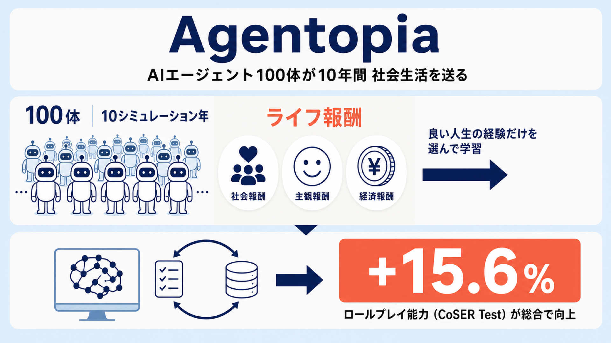
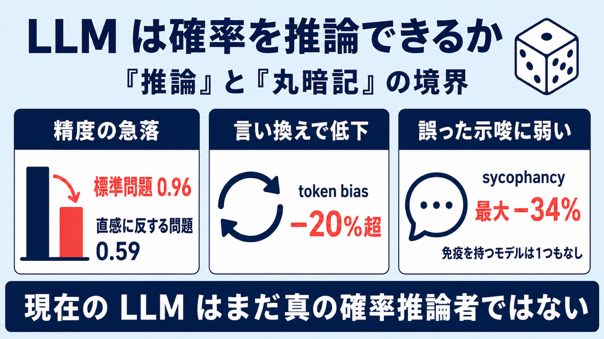
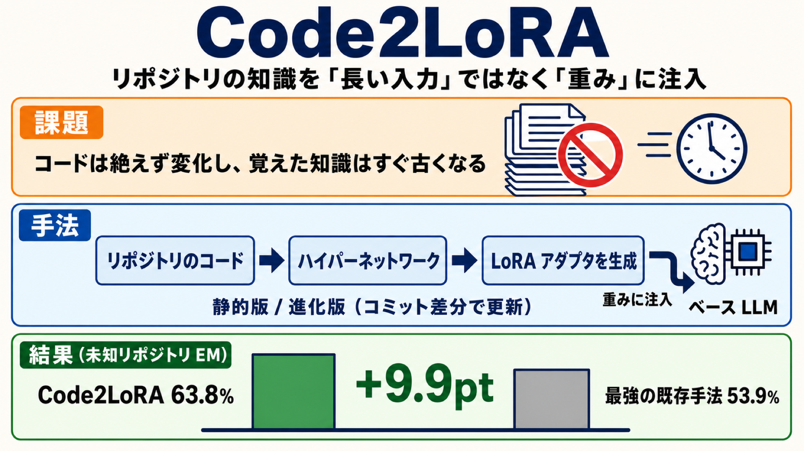

arXiv の新着論文から 1 本を選び、専門外の技術者にも読みやすい日本語で解説します。
-

2026-06-05
AIエージェント100体が「10年間」社会生活を送る——生活から学ぶLLMの試み「Agentopia」
LLM エージェント 100 体を仮想世界で 10 シミュレーション年にわたり生活させる長期ライフシミュレーション基盤 Agentopia。人間の幸福度を写した「ライフ報酬」が高かった行動だけを選んで再学習させ、人間データに頼らずロールプレイ能力を +15.6% 改善しました。
-

2026-06-05
LLM はサイコロを正しく振れるか――確率問題で露わになる「推論」と「丸暗記」の境界
16 モデルを離散確率の問題で検証した研究。標準問題は平均精度 0.96 とほぼ完璧でも、直感に反する問題は 0.59 に急落し、言い換えや誤った示唆だけで成績が崩れました。著者らは「現在の LLM はまだ真の確率推論者ではない」と結論づけています。
-

2026-06-04
リポジトリの知識を「長い入力」ではなく「重み」に注入する Code2LoRA
リポジトリの知識を毎回の長い入力ではなく LoRA アダプタの重みとして注入し、ハイパーネットワークで自動生成する手法 Code2LoRA。静的版と、コミット差分で安く更新する進化版を備え、専用ベンチマーク RepoPeftBench で既存手法を上回りました。
-

2026-06-04
ヒューマノイドの「指示の出し方」を10次元に圧縮する：3人の先生から学ぶ全身制御器 HANDOFF
ヒューマノイドへの指示を 10 次元のコンパクトなコマンドに置き換え、得意分野の異なる 3 つの教師方策を状況依存の MoE 蒸留で 1 つの制御器にまとめた研究。実機の Unitree G1 で SOTA 並みの速度追従と最大級の操作範囲を両立しました。